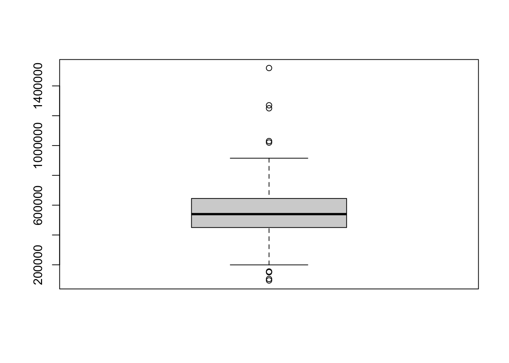
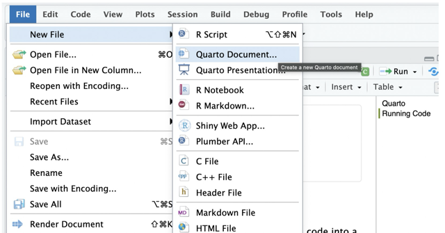
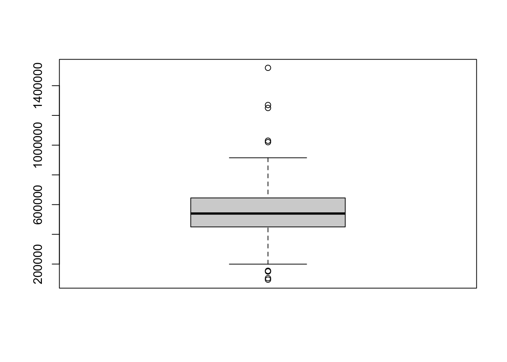

Code
boxplot(duke_forest$price)
In this lab, we introduce an interface known as quarto that is helpful in creating reproducible reports - documents that allow readers of your work to rerun and verify your analyses. You will recall that in our first lab, you used an R script and had to copy and paste your work to an external place such as a word document for submission. With a quarto file, you don’t have to do this. You can generate (render) documents in different formats (e.g., pdf, word, etc) for sharing and submission. Quarto allows you to write both code and plain text in the same document.
The code has to be written in what is known as code chunks while the plain (non code) text goes to the white spaces of the page.
We will also learn to use the Tidyverse package (introduced and installed during lab 1) to perform basic summary statistics and contrast it with the base R approach (introduced in lab 1).
If you are using the desktop version of RStudio, you may need to download quarto first. Click here to download it.
To create your first Quarto file, follow the following steps:
Go to File>New File > Quarto document. See below:

Next, save the document as lab_2. Note that if you do this correctly, it will appear as lab_2.qmd in your files pane. The .qmd extension indicates that this is a quarto file.
Now, click on source mode (top left corner of the document) to see the code behind the document.
Next, click on render to see what your rendered file looks like.
Before you proceed, delete everything on the document except the YAML header (The section enclosed inside three dashes at top and bottom).
A quarto file has three main parts - the YAML header, plain text and code chunks. See details below:
YAML HeaderThe YAML header is the part of the document that contains metadata about the document. It is located at the top of the document and is enclosed by three dashes (---) at the beginning and end. The YAML header contains information such as the title of the document, author name, date, output format, and other options that control how the document is rendered. Here is an example of a YAML header:
---
title: "My Analysis Report"
author: "John Smith"
format: html
---Notice that the YAML header is written in a specific format called YAML (YAML Ain’t Markup Language). Each line in the YAML header consists of a key-value pair, where the key is followed by a colon (:) and the value. The keys and values are case-sensitive, and the values can be strings, numbers, booleans, or lists. For example, the title key has a string/character value of “My Analysis Report”, the author key has a string value of “John Smith”, and the format key has a string value of html (no quotes for format).
Plain TextPlain text is the part of the document that contains the main content of the report. It is written in Markdown, a lightweight markup language that allows you to format text using simple syntax. For example, when you are in source mode you can use # to create headings, * or _ to create emphasis (italic or bold), and - or * to create lists. When in visual mode, it is easier to create these by using point and click options on the menu bar. It is often helpful to switch between the modes.
Code ChunksCode chunks are the part of the document that contains the R code used to perform the analysis. In source mode, code chunks are enclosed by three back ticks (```) at the beginning and end, and they can be customized using various options. You can add a new chunk by clicking on the green plus sign on the menu bar and selecting R as the language. You can also use the keyboard shortcut Ctrl + Alt + I (Windows) or Cmd + Option + I (Mac) to insert a new code chunk. Source mode if often helpful for spotting errors in your code as it gives a line number for each line of code.
To render means to process your quarto file and generating the output defined (in our case html). By default, rendering fails if your code has some errors, although this can be deactivated. The good news is that quarto will tell you where the errors occurred so you can fix them. If you want to see the exact line where the error occurred, you will need to switch to the source mode if you are in visual mode. It is important to note that code will run line by line starting from top to bottom. This means that your code must be ordered in some way. For example, if you need to use a function from a certain package (e.g., tidyverse), the package must be loaded first before calling that function. To load a package, you use the library() function.
In a code chunk, you write code that you want to reproduce in your report. There are other operations such as installing packages that should be done only in the console. For example, running install.packages() in a code chunk means quarto will try to install that package every time you render your document. Recall that we install packages only once in a given project. However, operations such as activating packages (i.e., library()) may be included in the quarto file near the top of the document.
As a start, let us load the openintro and tidyverse packages. Recall that these packages were already installed (see lab 1). Copy and paste the following code in the first code chunk:
library(openintro)
library(tidyverse)To load data stored in a package, we first make sure the package is installed and activated. Then, we used the function data() with the dataset name as the argument. We want to load a dataset called duke_forest from the openintro package. Since we already installed the openintro package and we have already loaded the package (see above), we use the code below:
data(duke_forest)To learn more about this dataset, you can use the ? operator as shown below.
?duke_forestQuestion: What can you say about this dataset? In particular, how many observations and how many variables does it have? Identify the variables by type (i.e., numerical or categorical).
We are going to use the price variable in the dataset to perform some analyses. Specifically, we will find the measures of center (mean and median) and measures of location such as quartiles and interpret these in context. We will use base R approach as well as functions from the dplyr package (part of the tidyverse package).
Base R ApproachTo get the mean of the price variable, we copy and paste the following code in a new code chunk:
mean(duke_forest$price)The $ operator is used to extract a variable from a data frame. In this case, we are extracting the price variable from the duke_forest data frame.
Tidyverse/dplyr ApproachTo find the mean of the price variable using the dplyr package, we use the summarize() function. Copy and paste the following code in a new code chunk:
duke_forest |>
summarize(mean(price))The |> symbol is known as the pipe operator. It is used to pass the output of one function to another function. In this case, we are passing the duke_forest data frame to the summarize() function.
Tidyverse uses the pipe operator a lot. Code written in this manner is (arguably) easier to read than the base R format. Not also that base R code can be quite cumbersome especially as you add more arguments.
For the most part, will use the Tidyverse workflow in this course.
To find the median of the price variable using both approaches, we proceed as follows:
# Base R approach
median(duke_forest$price)# Tidyverse approach
duke_forest |>
summarize(median(price))To find the first quartile of the price variable using both approaches, we proceed as follows:
# Base R approach
quantile(duke_forest$price, 0.25)# Tidyverse approach
duke_forest |>
summarize(quantile(price, 0.25))To find the third quartile, you can replace 0.25 with 0.75 in the code above.
To find the minimum value of the price variable using both approaches, we proceed as follows:
# Base R approach
min(duke_forest$price)# Tidyverse approach
duke_forest |>
summarize(min(price)You can find the maximum value of the price variable by replacing min() with max() accordingly.
A box plot is a graphical representation of the five-number summary of a numerical variable. It shows the minimum, first quartile, median, third quartile, and maximum of the variable. To create a boxplot of the price variable, we can use the boxplot() function as shown below.
boxplot(duke_forest$price)
Note that this code uses base R approach. We will learn to create boxplots using ggplot2 (part of the tidyverse package) in a later lab. Based on the box plot above, how would you describe the distribution of the price of the homes?
Create a new quarto file and save it as lab_2_Exe. Do not use the same quarto file we used during class explorations. Answer the following questions in the quarto file that you create. When you are done, render the document to generate a PDF. To generate a pdf, you will have to change html format to pdf in the YAML header. Submit the rendered pdf file on Canvas.
Load the openintro and tidyverse packages in your quarto file.
Load the loan50 dataset from the openintro package. Briefly describe the dataset. In particular, how many observations are in this dataset? What are the observations/cases?
How many variables are in the dataset? Name any two numerical variables and any two categorical ones.
Using the Tidyverse/dplyr package, compute the following summary statistics for the annual_income variable in the dataset. Use separate code chunks for each statistic.
Which measure of center (mean or median) do you think is more appropriate for describing the typical annual income? Briefly explain your answer.
Find the 5-number summary of the annual_income variable then create a boxplot of the variable. Briefly describe the distribution of the variable based on the boxplot.